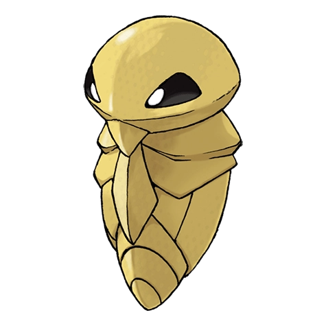
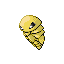
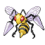

Назад
Какуна

Какуна — Покемон 1 поколения под номером 14 в Покедекс. Обитает он в регионе Канто и относится к Ядовитому и Жучиному типу. Какуна остается практически неподвижным, цепляясь за дерево. Однако внутри этого Покемона происходит много процессов, поскольку он готовиться к будущей эволюции. Это заметно по тому, насколько горячей становится на ощупь его скорлупа.
Тип:
Жук
Ядовитый
Эволюция

# 014 Какуна
=>

# 015 Бидрилла